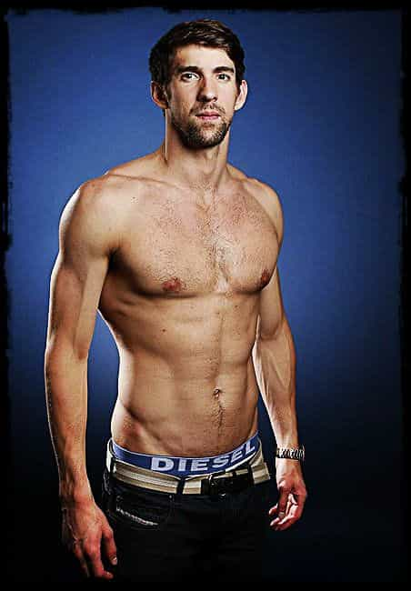

< < < Back
4 Things I Do To Maintain An Elite Physique – Return Of Kings
Disclaimer: This is not medical advice. Always consult a licensed physician before starting any diet or workout regimen.
Since taking the red pill a few years ago I’ve learned the how to successfully sleep with pretty girls, the importance of financial shrewdness, and how extremely valuable the commodities of time and freedom are.
While all of the those are staples of red pill awareness, there’s one element that has changed my life the most: My physique. I’m in better shape at 39 than I ever was in my 20s. No, I’m not some hulking 260 lb behemoth with arms so big I can’t wipe my own ass. But I do have a solid, lean muscular frame as I stand at 6’1”, 225lbs, at between 13% and 17% body fat at any given time (though these days I’m hovering around 230lbs/17% on account of my holiday ‘carb loading’ diet).
Holiday sweets are my Achilles heel
Sculpting my body into what it is today is single most important change I made when I decided to live the crimson capsule lifestyle. Aside from some of the obvious benefits, looking this shot my confidence into the stratosphere which is important when talking to women.
As men, we’re constantly bombarded with “bro science,” personal trainers at the gym who don’t know what they’re talking about, and endless infomercials about contraptions that get you ripped simply by using it 3 times a week. Any man who’s tried a few of these things know by now that most of them are a colossal waste of time and money. Hell, even our friends and family members try to impart us with fitness wisdom that seems to go nowhere.
Today, I’m going to give you four tried and true ways to get into and stay in the best shape of your life. Unlike our resident fitness expert Larsen Halleck, I’m certainly no strength and conditioning guru. But every one of these are the honest to goodness, no bullshit techniques and strategies I employ myself on a daily basis to maintain a great physique.
4. Compound lifts

We’ve all been in the gym watching people go through all the nautilus and cable machines to make sure they hit every muscle group or what they like to call ‘isolation’ exercises. If this is what you do when you workout, stop….now.
The only thing at the gym a man needs to build solid muscle is a power rack (also called a squat rack). It is the only piece of equipment I’ve used for the last 5 years and the regimen that has given me the best results in conjunction with the power rack is Stronglifts 5X5.
Stronglifts 5X5 is a workout that utilizes 5 basic lifts: Squat, bench press, overhead press, barbell row, and the deadlift. 5X5 means 5 sets of 5 reps with each lift. For example, you do one set of five squats, rest for 90 seconds, then do another set of five, and so forth until you get to five sets.
These 5 lifts are simple, yet challenging, and build solid, sustainable muscle. The reason for this is that they are all compound lifts. That is, you use every muscle in your body to perform each lift.
Stronglifts is predicated on using a very effective technique called progressive load meaning you start lifting with only the bar (45lbs) and work your way up. For example, session one you’ll squat 45 lbs, session two 50 lbs, and so forth.
It’s important to stick to the program and progress slowly with the weight and resist the temptation to skip ahead. In the beginning you’ll blow through the workouts because the weight is light. But starting light helps you concentrate on proper form which will really help when lifting heavier weight. If you do this consistently, you’ll be squatting 300 lbs quicker than you think.
The deadlift engages more muscle groups than 100 nautilus or cable contraptions
We’ve all seen ‘captain upper body’ who has massive arms and shoulders but skinny legs. Conversely we’ve seen dudes with tree trunk legs but not much above the waist. The key building real world strength and a balanced physique are compound lifts. Leave the “mirror muscle” workouts and “split routines” to the meatheads and gym bros who seem to be more interested in talking and chugging protein shakes than actually working out.
Compound exercises are easily the best way to achieve a superior physique and building strength that can be utilized outside of the gym. Stronglifts 5X5 is all you need to add muscle to build a strong, lean body and it’s the only routine I’ve used for the last half decade. I can personally attest to both its advantages and results.
3. Swimming or biking
Ever seen a marathon runner who’s both ripped and has even a decent amount of muscle muscle mass? Me neither. Sprinters notwithstanding, most runners don’t have bodies that are aesthetically pleasing in the least. Not to mention the constant knee and ankle issues they have from running thousands of miles on asphalt.
Olympic swimmers, on the other hand, are leaned out. Thousands of miles of swimming has yielded them plenty of muscle, low body fat, and none of the negative long term side effects of high impact cardiovascular training like running. Same goes for cyclists. It takes a lot more than bionic lungs to ride the miles they do.

Olympic swimmer Michael Phelps has a lean, balanced, physique
Low impact cardiovascular training is the best way to burn fat, increase endurance, with minimal risk of injury or lingering aches and pains. This leads to being able to do it longer and more consistently.
Swimming is one of the best exercises ever. You’re using every muscle in your body to propel forward and your lungs get an insane workout. I’m in great shape and even I have to take a short break between laps. But biking is where I’ve decided to plant my flag as far as cardio goes. I’d love to swim 20 laps a day but it’s difficult to find a lap pool that isn’t crowded year ‘round.
This season I’ve ridden over 4,500 miles all outdoors (which is much less boring). It keeps me lean, forgives any deviations in diet I may succumb to, and it’s easy on my joints. It also helps me with weight lifting. As a result of having great cardiovascular stamina I can lift more with shorter rests in between.
No, you don’t have to ride the mileage I do but if you want to shred out, cardiovascular training is paramount no matter what any magazine, gym bro, or some you tube knucklehead tells you. A lean physique is much more attainable with a steady regimen of swimming, biking or both.
2. Keto diet
My go-to diet when I want to lean out
There are many diets out there but the one that gives me the best results is the ketogenic diet also known as the keto diet.
The ketogenic diet is a high fat, high protein, low carb diet. It’s predicated on consuming 100 grams of carbohydrates or less per day. After a few days your body goes into a state called ketosis which means your body is now using fat for fuel rather than carbohydrates.
The longer you’re in ketosis, the longer your body is in fat burning mode. A lot of pills, potions, and creams out there claim to “throw your body into fat burning mode!”, but the only time your body is truly burning fat and lots of it is when you’re in ketosis because your body is using only fat for fuel.
When I need to lean out or drop a few percentage points in terms of body fat, I use the keto diet every time. Some people live the keto lifestyle which is always being in ketosis and these people are all in great shape. You can do a quick search on Google and find countless keto diet communities, recipes, message boards, etc. and you’ll learn all you need to know.
If you’re looking to drop weight and hang onto the muscle you’ve worked hard for, the keto diet is the way it go. I discovered it a few years back and it has never failed me.
1. Testosterone replacement therapy
This little vial will change your life
I remember back in 1988 when Olympic sprinter Ben Johnson got popped for steroids. I was only a 4th grader then but it was all over the news and me and my classmates talked about it. For Gen-Xers like myself, that’s the very moment when steroids became the scarlet letter.
Today, we have much more knowledge in terms of injectable testosterone, steroids, and HGH. It’s not the boogie man we were all raised to believe though sports media would have us believe otherwise.
The reason all major professional sports ban steroids, testosterone, and HGH is because they work. And when prescribed by and monitored by a doctor the results are life changing. I’ve been on testosterone replacement therapy (injectable) for a little over two years now and it has literally changed my life. I look better, my skin is tighter, I’m stronger, I have more stamina and endurance, I fuck better, my sex drive is off the charts, the list goes on and on.
Aside from discovering the red pill, consulting with my doctor about TRT is the best decision I’ve ever made in my life. I get much more out of every workout, it keeps unwanted fat off my frame and holds onto the muscle I gain.

Don’t waste your money on shit like this. Injectable testosterone is the most effective way to significantly boost testosterone and see measurable results.
I’ll turn 40 this year and I don’t look a day over 33. Some of that has to do with genetics (my family ages well) but the other half of the equation is that I don’t have a 39 year old body that looks as though it’s on the verge of breaking down. My body is lean, healthy and strong.
Yes, lifting weights helps, yes watching my diet closely and biking thousands of miles per year definitely helps. But I wouldn’t be able to lift the weight I do, or ride the miles I do and do it consistently if not for testosterone replacement therapy.
What’s more is that injectable testosterone is very inexpensive so most men who are gainfully employed and earn even a modest living can afford it.
I would strongly advise any man who is on the fence about testosterone replacement therapy to do yourself a favor, do the research, read the articles and stories, and go see your doctor.
Conclusion
So there you have it. The 4 things I personally employ to keep my body lean, strong, and maintain an elite physique. They’re simple, effective, and yield visible results both inside and out.
It’s important to know that getting into these routines and maintaining them will not be easy. It took me a good 2 months or so to get everything dialed in as far as my daily schedule and the time I put in. But once I got it all lined up, I got into the best shape of my life and I haven’t looked back.
Hopefully this column helps men take that next step and transform their bodies into what I like to call 5%ers. Good luck, gentlemen.
Be sure to check out Donovan’s podcast The Sharpe Reality on thesharpereality.com or his YouTube channel
Read Next: Don’t Believe The Myth That Weightlifting Will Slow You Down